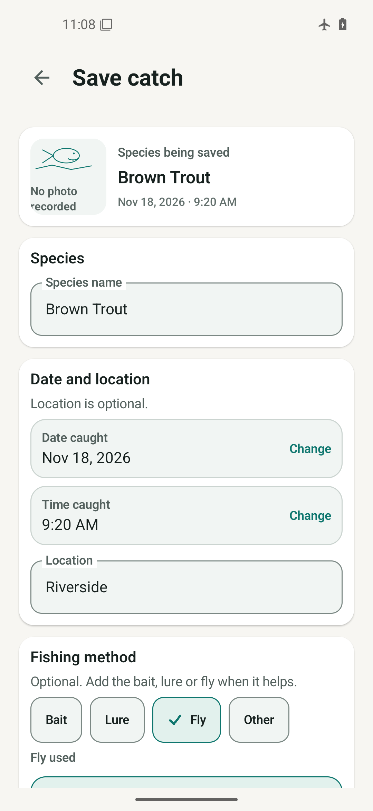
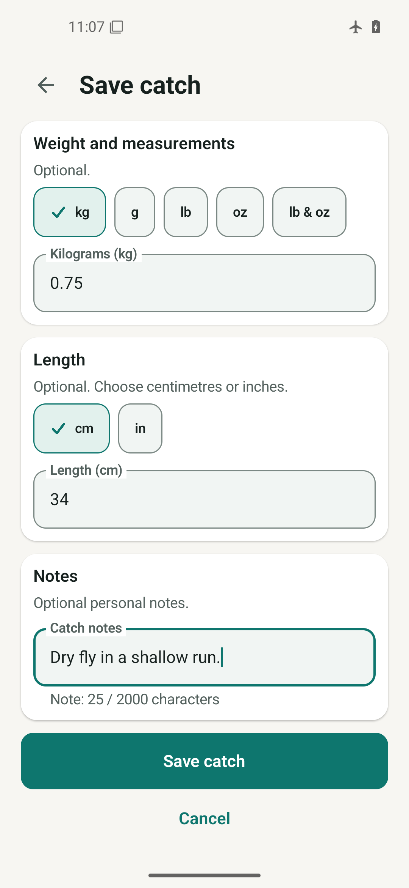
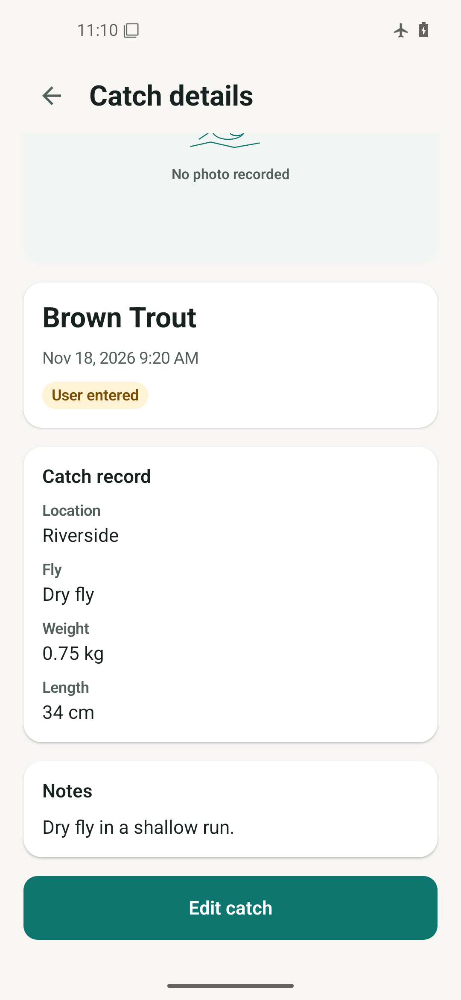
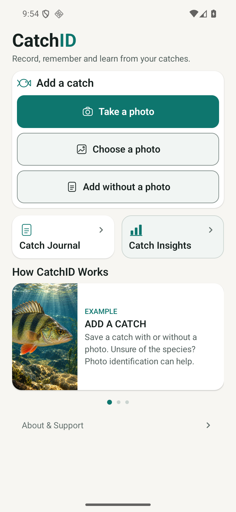
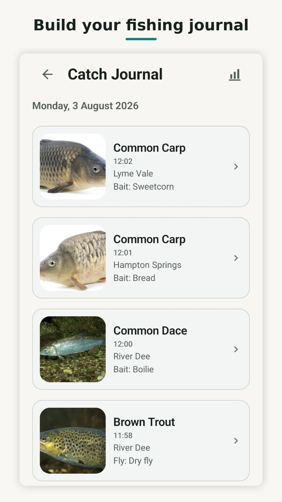

CatchID · CID-WEB-CRO-07A · 19 November 2026
Product screenshot review
3 genuine product originals · Review candidates · Not live
Recovered on one fresh, healthy API 35 Pixel 5 using the verified cloud-disabled 1.2.15 playtest APK. Actual CatchID UI · controlled demonstration data · no photo required. These untouched originals are for asset review; no website integration or publication is authorized. The previous failed API 36 attempt and all historical assets remain preserved.
Three current-source originals
New original · Save catch upper
Home → Add without a photo. Real species, date/time and optional location controls. The form naturally continues into the fly selector below the viewport. Untouched 1080 × 2340 PNG.
New original · Save catch lower
Same completed draft, lower scroll position: weight, length, note and full Save action. No keyboard or compositing. Genuine note-field focus/caret retained. Untouched 1080 × 2340 PNG.
New original · Catch details
Saved once and reopened through Catch Journal. No photo recorded remains visible; the decorative top of its placeholder is naturally scrolled offscreen. All sample values and Edit catch are readable. Untouched 1080 × 2340 PNG.
One fictional demonstration record, entered through the real app. Capture dates: 19 November 2026. Full-resolution originals retain actual status/navigation bars, including a small system notification icon. No private data, photo, ad, error dialog or emulator host controls are shown. Exact hashes and timestamps.
Existing approved-review assets
Historical · Home entry controls
Genuine 1.2.12 Home lineage. The approved website uses only the three entry controls. This is not the complete Save catch form.
Historical · Journal artwork
Retain as the published example pending current-fidelity acceptance. Source supports the row hierarchy; current protection UI varies with account state. Exact old capture build/date unknown.
Historical · Personal Records Retain the published example pending acceptance. Source supports this structure. Its PB card is not a Catch details screen.
Historical · Full Insights
Retain the published example pending acceptance. Source supports this structure. Its PB card is not a Catch details screen.
Historical · Full Insights Original counts and dates unchanged. No new statistics or running-app calculations. No fishing effort, catch-rate or method-success claim.
Historical · Identification artwork
Original counts and dates unchanged. No new statistics or running-app calculations. No fishing effort, catch-rate or method-success claim.
Historical · Identification artwork Retain as a qualified example. No live identification was requested; no current full result screenshot or accuracy verification is claimed.
Retain as a qualified example. No live identification was requested; no current full result screenshot or accuracy verification is claimed.
One target set, pending asset acceptance
Recommend the three new originals above for the manual-recording and saved-details proof. Retain existing Journal, Personal Records, Insights overview and ID examples only with their explicit current-fidelity and rights qualifications. Selection and composition caveats. Pete and ChatGPT must approve assets and demonstration-data captions before separately authorizing integration.